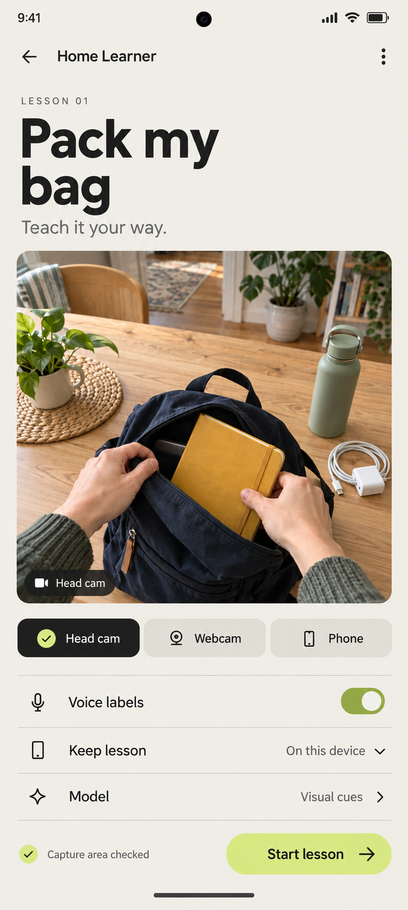
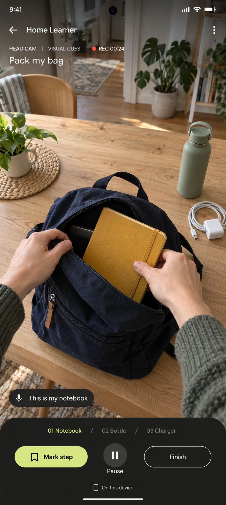
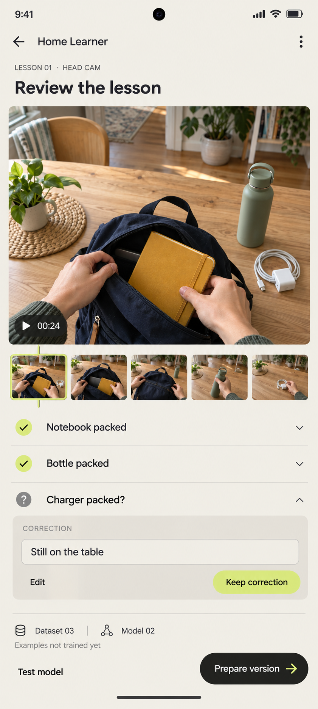

06 / Android / home teaching
Home Learner
Demonstrate a bounded home lesson through a head camera, webcam or phone. The Android companion supports setup, deliberate capture and human review.
4 generated art assets · 9 documents. This is a visual and specification review. No playable game, audio visualization, camera capture or model training is included.

Head cam remains the lesson source throughout. All people, camera feeds, connections, labels and version numbers are illustrative. No capture, pairing or training performed.
Nine linked specifications

Head cam remains the lesson source throughout. All people, camera feeds, connections, labels and version numbers are illustrative. No capture, pairing or training performed.

Head cam remains the lesson source throughout. All people, camera feeds, connections, labels and version numbers are illustrative. No capture, pairing or training performed.

Head cam remains the lesson source throughout. All people, camera feeds, connections, labels and version numbers are illustrative. No capture, pairing or training performed.